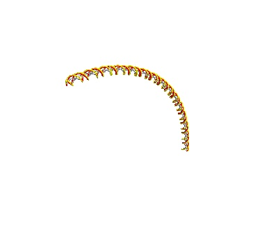

Making Single Strand DNA Models¶
It is recommended that you run this example inside a Jupyter environment rather than a VSCode or similar environment
This requires the mayavi jupyter extension jupyter nbextension install --py mayavi --user
[ ]:
import sys
from pathlib import Path
try:
from fractaldna.dna_models import dnachain as dna
except (ImportError, ModuleNotFoundError):
# Path modifications if working straight out of the git repo.
sys.path.append(str(Path.cwd().parent.parent.parent))
from fractaldna.dna_models import dnachain as dna
from mayavi import mlab
# Disable this option for interactive rendering
mlab.options.offscreen = True
# Enable this option for an interactive notebook
# mlab.init_notebook()
Making and plotting a single DNA strand¶
[ ]:
# Make a 40 base pair long DNA Strand
chain = dna.DNAChain("GTAC" * 10)
# Generate a simple Matplotlib visualisation
# The basic plot shows each molecule as a point
plot = chain.to_plot()
plot.gca().set_title("Basic Plot")
# You can also hide certain molecules (b = base, s=sugar, p=phosphate)
plot_phosphate = chain.to_plot(plot_b=False, plot_s=False, plot_p=True)
plot_phosphate.gca().set_title("Phosptate Only Plot")
# The surface plot plots each DNA molecule as a ball
plot_surface = chain.to_surface_plot()
plot_surface.gca().set_title("Surface Plot")
Generating pretty plots with MayaVI¶
[ ]:
# MayaVI can generate nicer plots, joining the strands together
plot = chain.to_strand_plot()
plot.scene.save_jpg("single_strand_strand_plot.jpg")

[ ]:
# Or you can just plot the path of the entire block of dna, which looks better for a curved chain
chain = dna.TurnedDNAChain("GATC" * 40)
plot = chain.to_line_plot()
plot.scene.save_jpg("single_turned_strand_line_plot.jpg")
[ ]:
plot = chain.to_strand_plot()
plot.scene.save_jpg("single_turned_strand_strand_plot.jpg")
Exporting a DNA strand as text¶
[ ]:
# The chain can be converted to a text stream for saving
print(chain.to_text()[:1000], "...")
[ ]:
# Or a DataFrame
chain.to_frame()
[ ]: